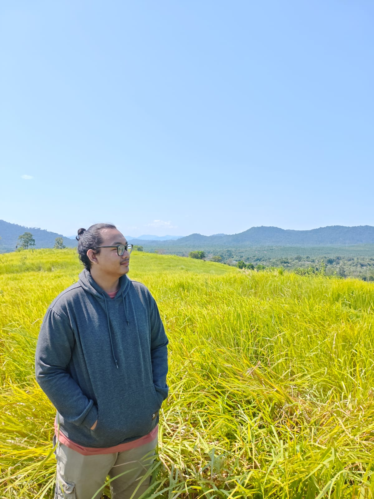

Deslo Aldo Anggoro
Saya adalah seorang Mahasiswa yang senang belajar hal-hal baru dan mengeksplorasi dunia di sekitar saya.
"Jangan takut untuk mencoba sesuatu yang baru, karena setiap pengalaman adalah bagian dari proses belajar." — Deslo Aldo Anggoro
Biodata
| Nama Lengkap | Deslo Aldo Anggoro |
| Nama Panggilan | Deslo |
| Tempat, Tanggal Lahir | Ketapang, 1 Desember 2006 |
| Jenis Kelamin | Laki-laki |
| Alamat | Ketapang, Kalimantan Barat |
| Agama | Islam |
| Status | Mahasiswa |
Riwayat Pendidikan
2022 - 2025
SMA NEGERI 1 KETAPANG
SMA NEGERI 1 KETAPANG
2019 - 2022
SMP NEGERI 1 KETAPANG
SMP NEGERI 1 KETAPANG
2013 - 2019
SD NEGERI 09 KETAPANG
SD NEGERI 09 KETAPANG
Hobi dan Minat
- Bermain Game
- Membaca Buku
- Mendengarkan Musik
- Minat saya yaitu pada Programming
Galeri




Kontak
Email: h1101251036@student.untan.ac.id
No. HP: 089633999997
Instagram: @Desloal
GitHub: DesloAl